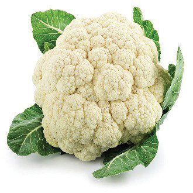
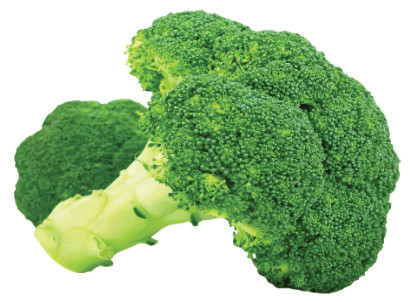
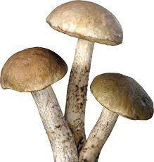

Flower vegetables: These are plants whose flowers serve as food. They are also known as edible flowers. These include cauliflowers, pumpkin flowers and broccoli. Figure 4.16 shows flower vegetables.

Cauliflower

Broccoli
Figure 4.16: Flower vegetables
Fungi vegetables: These vegetables refer to varieties of mushrooms such as button, portobello and shiitake. Figure 4.17 exemplifies a fungi vegetable.

Figure 4.17: Fungi vegetable
Tuber vegetables: These vegetables grow underground on plant roots. They are usually rich in starch. These include potatoes, cassava and yams. Figure 4.18 is illustrative of tuber vegetables
60